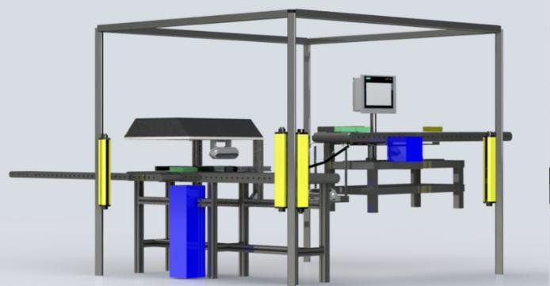
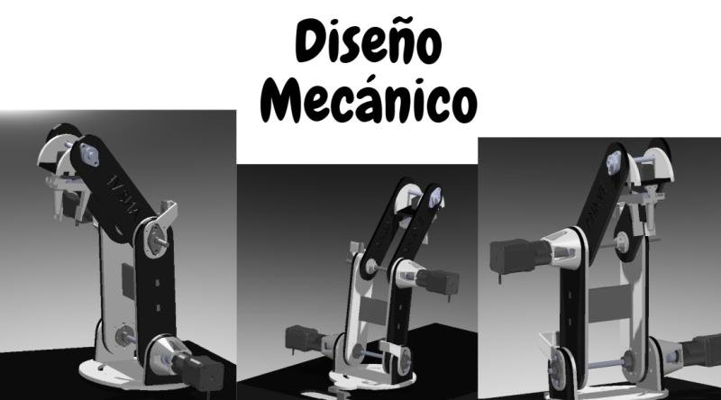
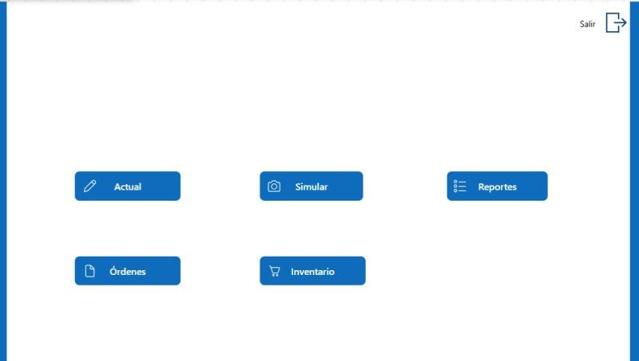
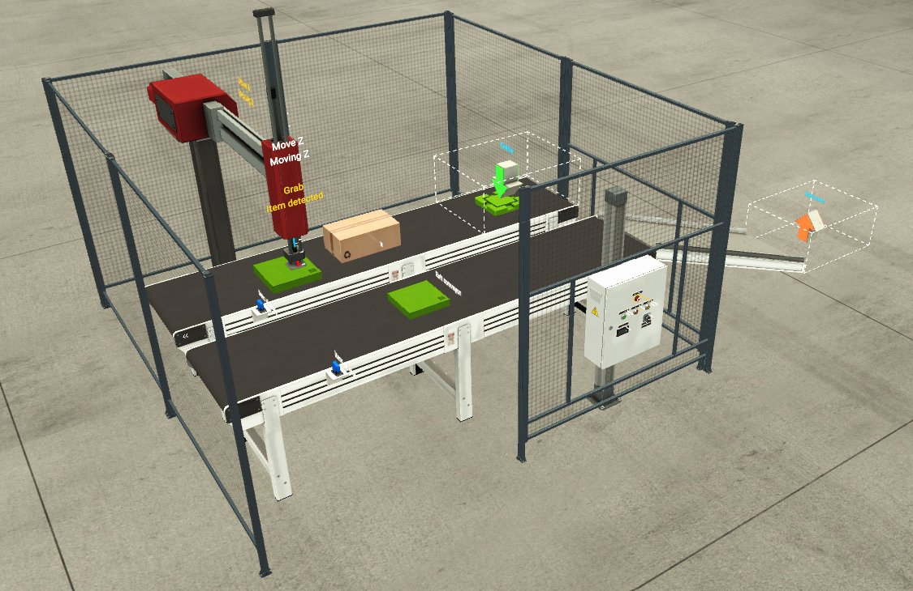

Engineering work
All Projects

Industrial · Machine Vision
Biscuit Package Inspector
Automated dual-inspection system reducing secondary packaging defects by 99% through computer vision and weight verification on a live production line.
Cognex InSight 2800Siemens S7-1500Check WeigherSafety Curtains

Robotics · AI
Connect 4 AI Robot
A robotic arm that plays Connect 4 strategically using a Python AI algorithm, translating game moves via serial to an Arduino-controlled arm with MATLAB-computed kinematics.
PythonArduino MegaMATLABPygameKinematics

Software · Industry 4.0
Production Standardization System
End-to-end production management platform with live order tracking, KPI dashboards, and a route optimization algorithm for manufacturing lines.
Power AppsSharePointPower AutomateDAX

Software · IIoT
Industrial Energy Monitoring System
Real-time energy monitoring platform integrating Schneider meters via BACnet, storing electrical data in MySQL and visualizing through a custom web dashboard.
PythonBACnet/IPMySQLPHPSchneider

Industrial · PLC Programming
Pick & Place — PLC Control & Monitoring
Fully programmed Pick & Place system with real-time production monitoring built in TIA Portal V17, PLCSIM and Factory I/O. State machine in SCL + safety logic in Ladder.
TIA Portal V17S7-1500SCLLadderFactory I/O